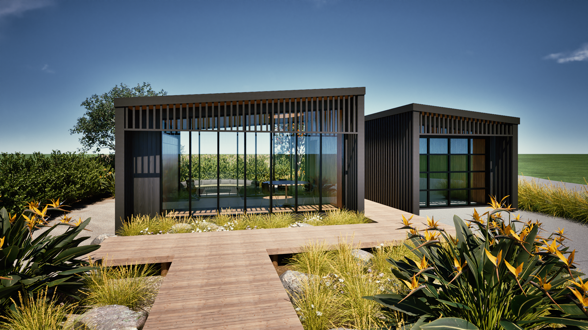
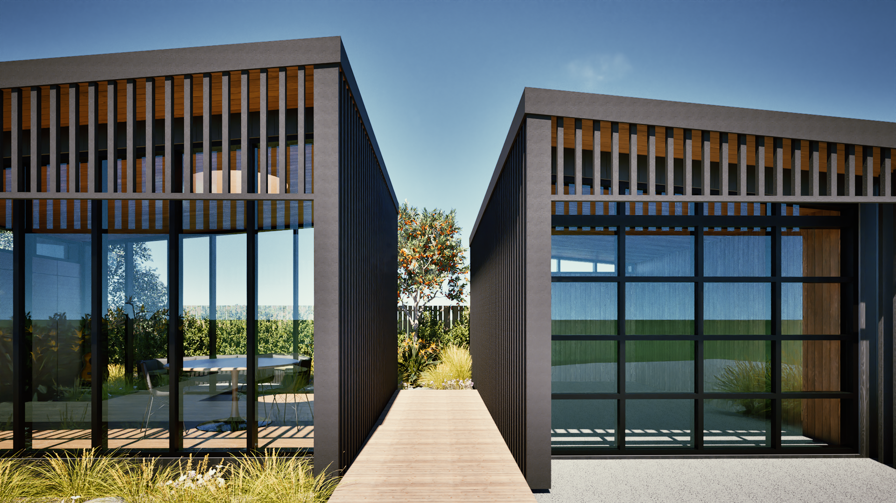
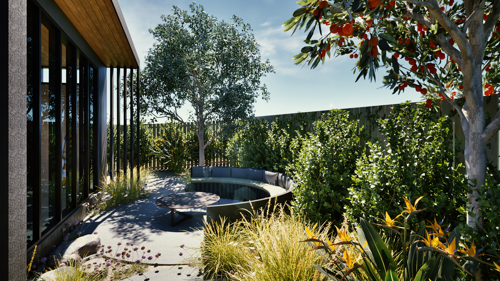
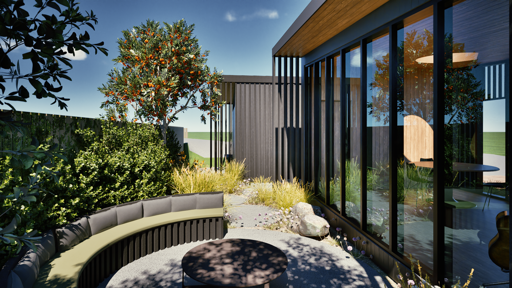
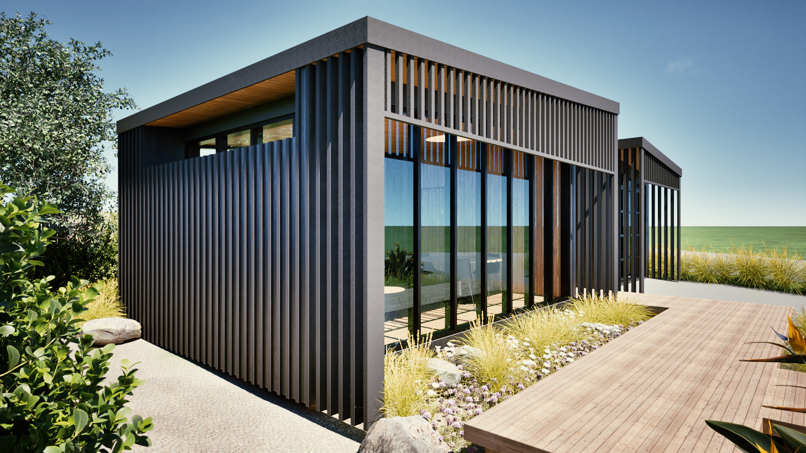
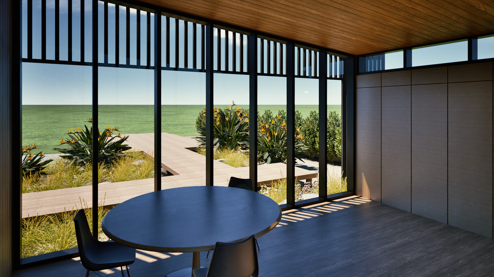
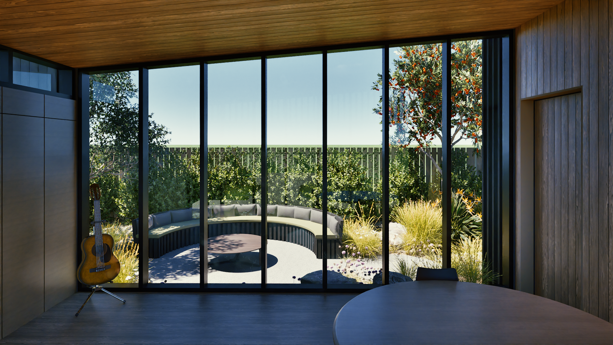
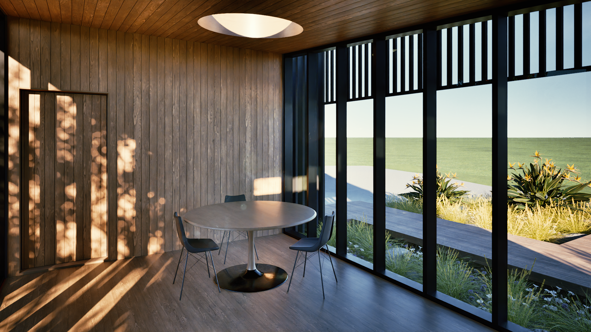

Preliminary Design · Kapiti Coast
Black Box Studio
The studio and garage are designed to feel light and delicate, with balanced proportions that still carry a sense of permanence for the family, their creative pursuits, possessions and memories. Charred timber board and batten cladding gives the exterior texture and depth, softening its form, while vertical charred timber battens filter natural light and form the glazed recess. Overhead, similar vertical battens shade the north-west windows, filtering direct sunlight to reduce overheating and glare to the interior. The studio sits on timber piles, relocatable and appearing to float lightly above the ground, with planting around its edges. In comparison the garage feels grounded by a concrete slab and foundation fronted by a glass garage door.
A walkway between the two buildings takes you on a journey through the site, where you experience the exterior forms and materials of the buildings. Set along this walkway on the south wall are hidden entry doors into the studio and garage. Continue the journey between the buildings and it opens up to the courtyard beyond.
Inside, a circular skylight and round table connect the studio to the courtyard, the circle representing a place of equality. The family can gather around the table or in the courtyard to enjoy their creative pursuits together. This idea carries on into the courtyard itself, where rounded organic-shaped pavers lead to a circular gathering space. Framed by nature with a visual axis through the studio towards the ocean, the courtyard is planted in layers - ground covers spreading between pavers and pebbles, small to medium coastal plants for variation in height, and larger hedging and trees for privacy.







